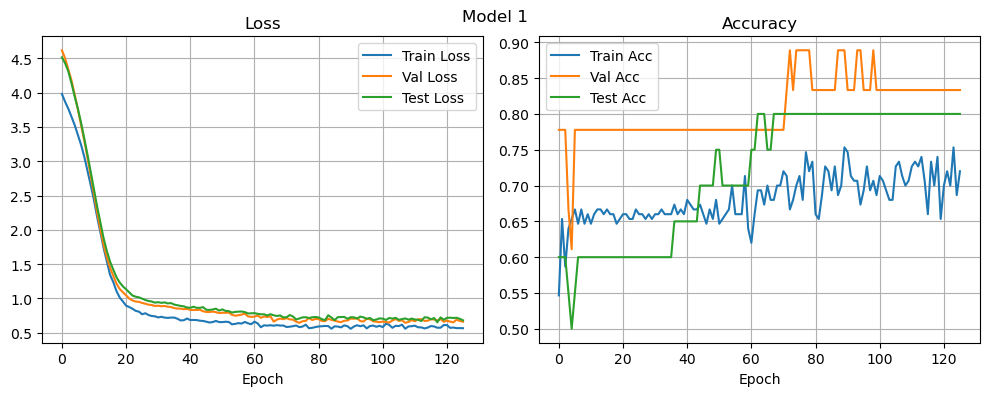
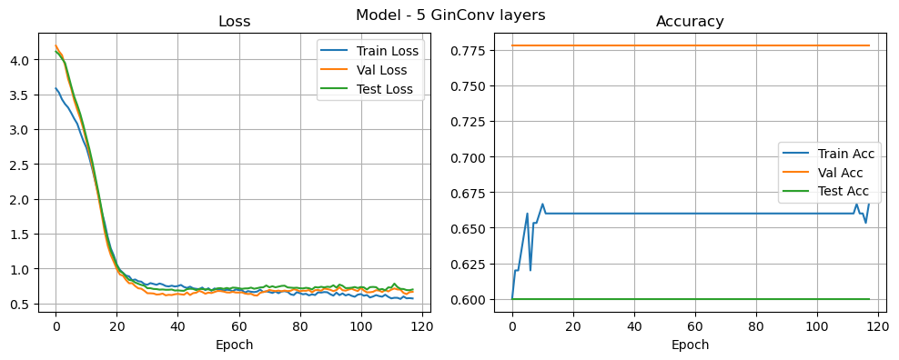
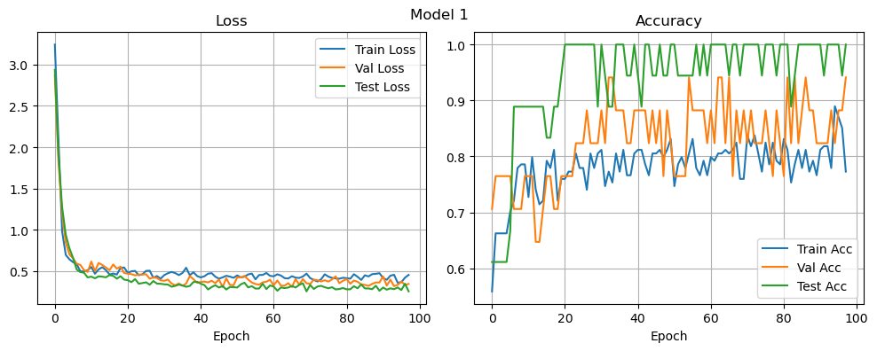
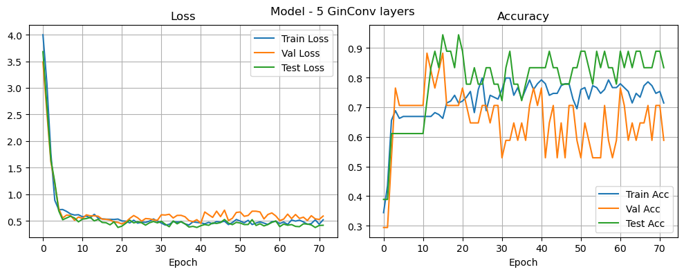

%%capture capt
!pip install matplotlibDefine Models
import numpy as np
import matplotlib.pyplot as plt
import torch
import torch.nn as nn
import torch.nn.functional as F
from torch_geometric.nn import GINConv, global_mean_pool
from torch_geometric.utils import get_laplacian
import sys
sys.path.append('../model')
from mewisPool_layer import MLP, MEWISPooltorch.use_deterministic_algorithms(True)
torch.backends.cudnn.deterministic = Trueclass Net(nn.Module):
def __init__(self, input_dim, hidden_dim, num_classes, device):
super(Net, self).__init__()
self.gc1 = GINConv(MLP(input_dim=input_dim, hidden_dim=hidden_dim, output_dim=hidden_dim, enhance=True))
self.pool1 = MEWISPool(hidden_dim=hidden_dim, device=device)
self.gc2 = GINConv(MLP(input_dim=hidden_dim, hidden_dim=hidden_dim, output_dim=hidden_dim, enhance=True))
self.pool2 = MEWISPool(hidden_dim=hidden_dim, device=device)
self.gc3 = GINConv(MLP(input_dim=hidden_dim, hidden_dim=hidden_dim, output_dim=hidden_dim, enhance=True))
self.fc1 = nn.Linear(in_features=hidden_dim, out_features=hidden_dim)
self.fc2 = nn.Linear(in_features=hidden_dim, out_features=num_classes)
def forward(self, x, edge_index, batch):
x = F.relu(self.gc1(x, edge_index))
x_pooled, edge_index_pooled, batch_pooled, loss1 = self.pool1(x, edge_index, batch)
x_pooled = F.relu(self.gc2(x_pooled, edge_index_pooled))
x_pooled, edge_index_pooled, batch_pooled, loss2 = self.pool2(x_pooled, edge_index_pooled,
batch_pooled)
x_pooled = self.gc3(x_pooled, edge_index_pooled)
# readout = global_mean_pool(x_pooled, batch_pooled)
readout = torch.cat([x_pooled[batch_pooled == i].mean(0).unsqueeze(0) for i in torch.unique(batch_pooled)],
dim=0)
out = self.fc1(readout)
out = torch.relu(out)
out = self.fc2(out)
return out, loss1 + loss2class Net_complex(nn.Module):
def __init__(self, input_dim, hidden_dim, num_classes, device):
super(Net_complex, self).__init__()
self.gc1 = GINConv(MLP(input_dim=input_dim, hidden_dim=hidden_dim, output_dim=hidden_dim, enhance=True))
self.gc2 = GINConv(MLP(input_dim=hidden_dim, hidden_dim=hidden_dim, output_dim=hidden_dim, enhance=True))
self.pool1 = MEWISPool(hidden_dim=hidden_dim, device=device)
self.gc3 = GINConv(MLP(input_dim=hidden_dim, hidden_dim=hidden_dim, output_dim=hidden_dim, enhance=True))
self.gc4 = GINConv(MLP(input_dim=hidden_dim, hidden_dim=hidden_dim, output_dim=hidden_dim, enhance=True))
self.pool2 = MEWISPool(hidden_dim=hidden_dim, device=device)
self.gc5 = GINConv(MLP(input_dim=hidden_dim, hidden_dim=hidden_dim, output_dim=hidden_dim, enhance=True))
self.fc1 = nn.Linear(in_features=hidden_dim, out_features=hidden_dim)
self.fc2 = nn.Linear(in_features=hidden_dim, out_features=num_classes)
def forward(self, x, edge_index, batch):
x = self.gc1(x, edge_index)
x = torch.relu(x)
x = self.gc2(x, edge_index)
x = torch.relu(x)
x_pooled1, edge_index_pooled1, batch_pooled1, loss1 = self.pool1(x, edge_index, batch)
x_pooled1 = self.gc3(x_pooled1, edge_index_pooled1)
x_pooled1 = torch.relu(x_pooled1)
x_pooled1 = self.gc4(x_pooled1, edge_index_pooled1)
x_pooled1 = torch.relu(x_pooled1)
x_pooled2, edge_index_pooled2, batch_pooled2, loss2 = self.pool2(x_pooled1, edge_index_pooled1,
batch_pooled1)
x_pooled2 = self.gc5(x_pooled2, edge_index_pooled2)
x_pooled2 = torch.relu(x_pooled2)
readout = torch.cat([x_pooled2[batch_pooled2 == i].mean(0).unsqueeze(0) for i in torch.unique(batch_pooled2)],
dim=0)
out = self.fc1(readout)
out = torch.relu(out)
out = self.fc2(out)
return out, loss1 + loss2Apply on MUTAG
Load data
from torch_geometric.datasets import TUDataset
from torch_geometric.loader import DataLoaderpath = 'data'
dataset = TUDataset(path, name='MUTAG', use_node_attr=True, use_edge_attr=True).shuffle()
input_dim = dataset.num_features
num_classes = dataset.num_classesDownloading https://www.chrsmrrs.com/graphkerneldatasets/MUTAG.zip
Processing...
Done!def get_dataloaders(BATCH_SIZE=20, VAL_PCT=0.1, TEST_PCT=0.1):
BATCH_SIZE = 20
VAL_PCT = 0.1
TEST_PCT = 0.1
n_train = int(len(dataset) * (1 - VAL_PCT - TEST_PCT))
n_val = int(len(dataset) * VAL_PCT)
train_dataset = dataset[:n_train]
val_dataset = dataset[n_train: n_train+n_val]
test_dataset = dataset[n_train+n_val:]
test_loader = DataLoader(test_dataset, batch_size=BATCH_SIZE, shuffle=True)
val_loader = DataLoader(val_dataset, batch_size=BATCH_SIZE, shuffle=True)
train_loader = DataLoader(train_dataset, batch_size=BATCH_SIZE, shuffle=True)
return train_loader, val_loader, test_loaderBATCH_SIZE = 20
VAL_PCT = 0.15
TEST_PCT = 0.1
torch.manual_seed(42)
np.random.seed(42)
train_loader, val_loader, test_loader = get_dataloaders(BATCH_SIZE=BATCH_SIZE, VAL_PCT=VAL_PCT, TEST_PCT=TEST_PCT)
print(f'{len(train_loader.dataset)} training samples, {len(val_loader.dataset)} validation samples, '
f'{len(test_loader.dataset)} test samples.')150 training samples, 18 validation samples, 20 test samples.device = torch.device('cpu')
print(f'Using device: {device}')Using device: cpuLoad model architectures
hidden_dim = 32
nb_epochs = 200
learning_rate = 1e-4
weight_decay = 1e-5
scheduler_patience = 10
scheduler_factor = 1e-1
patience = 50def create_model(model_architecture, input_dim=input_dim, hidden_dim=hidden_dim, num_classes=num_classes, device=device,
learning_rate=learning_rate, weight_decay=weight_decay, scheduler_patience=scheduler_patience, scheduler_factor=scheduler_factor, verbose_scheduler=True):
model = model_architecture(input_dim=input_dim,
hidden_dim=hidden_dim, num_classes=num_classes, device=device).to(device)
optimizer = torch.optim.Adam(model.parameters(), lr=learning_rate, weight_decay=weight_decay)
scheduler = torch.optim.lr_scheduler.ReduceLROnPlateau(optimizer=optimizer,
patience=scheduler_patience,
factor=scheduler_factor,
verbose=verbose_scheduler)
criterion = torch.nn.CrossEntropyLoss()
return model, optimizer, scheduler, criterionTrain models
def validate(model, val_loader, criterion, device):
val_loss = 0.
val_corrects = 0
model.eval()
with torch.no_grad():
for i, data in enumerate(val_loader):
data = data.to(device)
out, loss_pool = model(data.x, data.edge_index, data.batch)
loss_classification = criterion(out, data.y)
loss = loss_classification + 0.01 * loss_pool
val_loss += loss.item()
val_corrects += (F.softmax(out, dim=1).argmax(dim=1) == data.y).sum().item()
val_loss /= len(val_loader)
val_acc = val_corrects / len(val_loader.dataset)
return val_loss, val_accdef train_epoch(model, train_loader, criterion, optimizer, scheduler, device):
train_loss = 0.
train_corrects = 0
model.train()
for i, data in enumerate(train_loader):
data = data.to(device)
optimizer.zero_grad()
out, loss_pool = model(data.x, data.edge_index, data.batch)
loss_classification = criterion(out, data.y)
loss = loss_classification + 0.01 * loss_pool
loss.backward()
train_loss += loss.item()
train_corrects += (F.softmax(out, dim=1).argmax(dim=1) == data.y).sum().item()
optimizer.step()
train_loss /= len(train_loader)
train_acc = train_corrects / len(train_loader.dataset)
scheduler.step(train_loss)
return train_loss, train_accdef train(model, criterion, optimizer, scheduler, train_loader, val_loader, test_loader, nb_epochs, patience, device,
print_every=None):
best_val_loss = float('inf')
best_test_acc = None
counter = 0
train_losses, val_losses, test_losses = [], [], []
train_accs, val_accs, test_accs = [], [], []
if print_every is None:
print_every = 1 if nb_epochs <= 20 else int(nb_epochs/20)
for epoch in range(nb_epochs):
train_loss, train_acc = train_epoch(model, train_loader, criterion, optimizer, scheduler, device)
val_loss, val_acc = validate(model, val_loader, criterion, device)
test_loss, test_acc = validate(model, test_loader, criterion, device)
train_losses.append(train_loss)
val_losses.append(val_loss)
test_losses.append(test_loss)
train_accs.append(train_acc)
val_accs.append(val_acc)
test_accs.append(test_acc)
if epoch % print_every == 0 or epoch == nb_epochs - 1:
print(f"Epoch [{epoch}/{nb_epochs}], Train loss: {train_loss:.3f}, Val loss: {val_loss:.3f}, Test loss: {test_loss:.3f},"
f" Train acc: {train_acc:.2f}, Val acc: {val_acc:.2f}, Test acc: {test_acc:.2f}")
# Early-Stopping
if val_loss < best_val_loss:
best_val_loss = val_loss
best_test_acc = test_acc
counter = 0
else:
counter += 1
# Early stopping
if counter > patience:
print(f'======== Early stopping at Epoch {epoch} ========')
if epoch % print_every != 0:
print(f"Epoch [{epoch}/{nb_epochs}], Train loss: {train_loss:.3f}, Val loss: {val_loss:.3f}, Test loss: {test_loss:.3f},"
f" Train acc: {train_acc:.2f}, Val acc: {val_acc:.2f}, Test acc: {test_acc:.2f}")
break
return train_losses, val_losses, test_losses, train_accs, val_accs, test_accs, best_test_accmodel, optimizer, scheduler, criterion = create_model(Net)
model_5, optimizer_5, scheduler_5, criterion_5 = create_model(Net_complex)c:\Users\wande\anaconda3\envs\gnn\Lib\site-packages\torch\optim\lr_scheduler.py:28: UserWarning: The verbose parameter is deprecated. Please use get_last_lr() to access the learning rate.
warnings.warn("The verbose parameter is deprecated. Please use get_last_lr() "train_losses, val_losses, test_losses, train_accs, val_accs, test_accs, _ = train(
model, criterion, optimizer, scheduler, train_loader, val_loader, test_loader,
nb_epochs, patience, device, print_every=1)Epoch [0/200], Train loss: 4.080, Val loss: 3.995, Test loss: 4.183, Train acc: 0.68, Val acc: 0.56, Test acc: 0.65
Epoch [1/200], Train loss: 4.002, Val loss: 3.904, Test loss: 4.110, Train acc: 0.61, Val acc: 0.56, Test acc: 0.65
Epoch [2/200], Train loss: 3.873, Val loss: 3.818, Test loss: 3.998, Train acc: 0.61, Val acc: 0.56, Test acc: 0.65KeyboardInterrupt: train_losses_5, val_losses_5, test_losses_5, train_accs_5, val_accs_5, test_accs_5, _ = train(
model_5, criterion_5, optimizer_5, scheduler_5, train_loader, val_loader, test_loader,
nb_epochs, patience, device, print_every=1)Epoch [0/200], Train loss: 3.583, Val loss: 4.195, Test loss: 4.112, Train acc: 0.60, Val acc: 0.78, Test acc: 0.60
Epoch [1/200], Train loss: 3.523, Val loss: 4.115, Test loss: 4.071, Train acc: 0.62, Val acc: 0.78, Test acc: 0.60
Epoch [2/200], Train loss: 3.425, Val loss: 4.060, Test loss: 4.009, Train acc: 0.62, Val acc: 0.78, Test acc: 0.60
Epoch [3/200], Train loss: 3.358, Val loss: 3.915, Test loss: 3.947, Train acc: 0.63, Val acc: 0.78, Test acc: 0.60
Epoch [4/200], Train loss: 3.308, Val loss: 3.718, Test loss: 3.786, Train acc: 0.65, Val acc: 0.78, Test acc: 0.60
Epoch [5/200], Train loss: 3.232, Val loss: 3.583, Test loss: 3.620, Train acc: 0.66, Val acc: 0.78, Test acc: 0.60
Epoch [6/200], Train loss: 3.148, Val loss: 3.412, Test loss: 3.464, Train acc: 0.62, Val acc: 0.78, Test acc: 0.60
Epoch [7/200], Train loss: 3.075, Val loss: 3.277, Test loss: 3.345, Train acc: 0.65, Val acc: 0.78, Test acc: 0.60
Epoch [8/200], Train loss: 2.949, Val loss: 3.152, Test loss: 3.214, Train acc: 0.65, Val acc: 0.78, Test acc: 0.60
Epoch [9/200], Train loss: 2.830, Val loss: 3.002, Test loss: 3.054, Train acc: 0.66, Val acc: 0.78, Test acc: 0.60
Epoch [10/200], Train loss: 2.732, Val loss: 2.825, Test loss: 2.880, Train acc: 0.67, Val acc: 0.78, Test acc: 0.60
Epoch [11/200], Train loss: 2.582, Val loss: 2.645, Test loss: 2.710, Train acc: 0.66, Val acc: 0.78, Test acc: 0.60
Epoch [12/200], Train loss: 2.415, Val loss: 2.447, Test loss: 2.517, Train acc: 0.66, Val acc: 0.78, Test acc: 0.60
Epoch [13/200], Train loss: 2.228, Val loss: 2.231, Test loss: 2.296, Train acc: 0.66, Val acc: 0.78, Test acc: 0.60
Epoch [14/200], Train loss: 2.042, Val loss: 2.011, Test loss: 2.080, Train acc: 0.66, Val acc: 0.78, Test acc: 0.60
Epoch [15/200], Train loss: 1.816, Val loss: 1.775, Test loss: 1.845, Train acc: 0.66, Val acc: 0.78, Test acc: 0.60
Epoch [16/200], Train loss: 1.651, Val loss: 1.523, Test loss: 1.595, Train acc: 0.66, Val acc: 0.78, Test acc: 0.60
Epoch [17/200], Train loss: 1.448, Val loss: 1.327, Test loss: 1.415, Train acc: 0.66, Val acc: 0.78, Test acc: 0.60
Epoch [18/200], Train loss: 1.287, Val loss: 1.190, Test loss: 1.255, Train acc: 0.66, Val acc: 0.78, Test acc: 0.60
Epoch [19/200], Train loss: 1.183, Val loss: 1.091, Test loss: 1.149, Train acc: 0.66, Val acc: 0.78, Test acc: 0.60
Epoch [20/200], Train loss: 1.053, Val loss: 0.986, Test loss: 1.043, Train acc: 0.66, Val acc: 0.78, Test acc: 0.60
Epoch [21/200], Train loss: 0.978, Val loss: 0.911, Test loss: 0.961, Train acc: 0.66, Val acc: 0.78, Test acc: 0.60
Epoch [22/200], Train loss: 0.936, Val loss: 0.894, Test loss: 0.932, Train acc: 0.66, Val acc: 0.78, Test acc: 0.60
Epoch [23/200], Train loss: 0.896, Val loss: 0.833, Test loss: 0.879, Train acc: 0.66, Val acc: 0.78, Test acc: 0.60
Epoch [24/200], Train loss: 0.885, Val loss: 0.786, Test loss: 0.835, Train acc: 0.66, Val acc: 0.78, Test acc: 0.60
Epoch [25/200], Train loss: 0.830, Val loss: 0.787, Test loss: 0.826, Train acc: 0.66, Val acc: 0.78, Test acc: 0.60
Epoch [26/200], Train loss: 0.840, Val loss: 0.746, Test loss: 0.797, Train acc: 0.66, Val acc: 0.78, Test acc: 0.60
Epoch [27/200], Train loss: 0.816, Val loss: 0.714, Test loss: 0.779, Train acc: 0.66, Val acc: 0.78, Test acc: 0.60
Epoch [28/200], Train loss: 0.809, Val loss: 0.708, Test loss: 0.762, Train acc: 0.66, Val acc: 0.78, Test acc: 0.60
Epoch [29/200], Train loss: 0.775, Val loss: 0.678, Test loss: 0.751, Train acc: 0.66, Val acc: 0.78, Test acc: 0.60
Epoch [30/200], Train loss: 0.765, Val loss: 0.643, Test loss: 0.715, Train acc: 0.66, Val acc: 0.78, Test acc: 0.60
Epoch [31/200], Train loss: 0.788, Val loss: 0.642, Test loss: 0.715, Train acc: 0.66, Val acc: 0.78, Test acc: 0.60
Epoch [32/200], Train loss: 0.776, Val loss: 0.639, Test loss: 0.704, Train acc: 0.66, Val acc: 0.78, Test acc: 0.60
Epoch [33/200], Train loss: 0.764, Val loss: 0.624, Test loss: 0.702, Train acc: 0.66, Val acc: 0.78, Test acc: 0.60
Epoch [34/200], Train loss: 0.782, Val loss: 0.627, Test loss: 0.695, Train acc: 0.66, Val acc: 0.78, Test acc: 0.60
Epoch [35/200], Train loss: 0.769, Val loss: 0.638, Test loss: 0.697, Train acc: 0.66, Val acc: 0.78, Test acc: 0.60
Epoch [36/200], Train loss: 0.747, Val loss: 0.613, Test loss: 0.692, Train acc: 0.66, Val acc: 0.78, Test acc: 0.60
Epoch [37/200], Train loss: 0.741, Val loss: 0.620, Test loss: 0.693, Train acc: 0.66, Val acc: 0.78, Test acc: 0.60
Epoch [38/200], Train loss: 0.751, Val loss: 0.617, Test loss: 0.696, Train acc: 0.66, Val acc: 0.78, Test acc: 0.60
Epoch [39/200], Train loss: 0.740, Val loss: 0.628, Test loss: 0.682, Train acc: 0.66, Val acc: 0.78, Test acc: 0.60
Epoch [40/200], Train loss: 0.746, Val loss: 0.634, Test loss: 0.684, Train acc: 0.66, Val acc: 0.78, Test acc: 0.60
Epoch [41/200], Train loss: 0.762, Val loss: 0.627, Test loss: 0.679, Train acc: 0.66, Val acc: 0.78, Test acc: 0.60
Epoch [42/200], Train loss: 0.733, Val loss: 0.621, Test loss: 0.678, Train acc: 0.66, Val acc: 0.78, Test acc: 0.60
Epoch [43/200], Train loss: 0.719, Val loss: 0.653, Test loss: 0.702, Train acc: 0.66, Val acc: 0.78, Test acc: 0.60
Epoch [44/200], Train loss: 0.737, Val loss: 0.617, Test loss: 0.707, Train acc: 0.66, Val acc: 0.78, Test acc: 0.60
Epoch [45/200], Train loss: 0.714, Val loss: 0.644, Test loss: 0.705, Train acc: 0.66, Val acc: 0.78, Test acc: 0.60
Epoch [46/200], Train loss: 0.706, Val loss: 0.650, Test loss: 0.687, Train acc: 0.66, Val acc: 0.78, Test acc: 0.60
Epoch [47/200], Train loss: 0.701, Val loss: 0.677, Test loss: 0.706, Train acc: 0.66, Val acc: 0.78, Test acc: 0.60
Epoch [48/200], Train loss: 0.725, Val loss: 0.660, Test loss: 0.703, Train acc: 0.66, Val acc: 0.78, Test acc: 0.60
Epoch [49/200], Train loss: 0.688, Val loss: 0.636, Test loss: 0.698, Train acc: 0.66, Val acc: 0.78, Test acc: 0.60
Epoch [50/200], Train loss: 0.714, Val loss: 0.652, Test loss: 0.699, Train acc: 0.66, Val acc: 0.78, Test acc: 0.60
Epoch [51/200], Train loss: 0.679, Val loss: 0.646, Test loss: 0.687, Train acc: 0.66, Val acc: 0.78, Test acc: 0.60
Epoch [52/200], Train loss: 0.711, Val loss: 0.660, Test loss: 0.694, Train acc: 0.66, Val acc: 0.78, Test acc: 0.60
Epoch [53/200], Train loss: 0.698, Val loss: 0.675, Test loss: 0.713, Train acc: 0.66, Val acc: 0.78, Test acc: 0.60
Epoch [54/200], Train loss: 0.699, Val loss: 0.674, Test loss: 0.716, Train acc: 0.66, Val acc: 0.78, Test acc: 0.60
Epoch [55/200], Train loss: 0.679, Val loss: 0.667, Test loss: 0.705, Train acc: 0.66, Val acc: 0.78, Test acc: 0.60
Epoch [56/200], Train loss: 0.693, Val loss: 0.655, Test loss: 0.718, Train acc: 0.66, Val acc: 0.78, Test acc: 0.60
Epoch [57/200], Train loss: 0.689, Val loss: 0.653, Test loss: 0.708, Train acc: 0.66, Val acc: 0.78, Test acc: 0.60
Epoch [58/200], Train loss: 0.672, Val loss: 0.664, Test loss: 0.723, Train acc: 0.66, Val acc: 0.78, Test acc: 0.60
Epoch [59/200], Train loss: 0.698, Val loss: 0.653, Test loss: 0.721, Train acc: 0.66, Val acc: 0.78, Test acc: 0.60
Epoch [60/200], Train loss: 0.687, Val loss: 0.653, Test loss: 0.715, Train acc: 0.66, Val acc: 0.78, Test acc: 0.60
Epoch [61/200], Train loss: 0.686, Val loss: 0.655, Test loss: 0.706, Train acc: 0.66, Val acc: 0.78, Test acc: 0.60
Epoch [62/200], Train loss: 0.653, Val loss: 0.639, Test loss: 0.712, Train acc: 0.66, Val acc: 0.78, Test acc: 0.60
Epoch [63/200], Train loss: 0.673, Val loss: 0.632, Test loss: 0.712, Train acc: 0.66, Val acc: 0.78, Test acc: 0.60
Epoch [64/200], Train loss: 0.664, Val loss: 0.635, Test loss: 0.723, Train acc: 0.66, Val acc: 0.78, Test acc: 0.60
Epoch [65/200], Train loss: 0.659, Val loss: 0.613, Test loss: 0.707, Train acc: 0.66, Val acc: 0.78, Test acc: 0.60
Epoch [66/200], Train loss: 0.667, Val loss: 0.609, Test loss: 0.715, Train acc: 0.66, Val acc: 0.78, Test acc: 0.60
Epoch [67/200], Train loss: 0.695, Val loss: 0.649, Test loss: 0.726, Train acc: 0.66, Val acc: 0.78, Test acc: 0.60
Epoch [68/200], Train loss: 0.660, Val loss: 0.661, Test loss: 0.728, Train acc: 0.66, Val acc: 0.78, Test acc: 0.60
Epoch [69/200], Train loss: 0.670, Val loss: 0.669, Test loss: 0.754, Train acc: 0.66, Val acc: 0.78, Test acc: 0.60
Epoch [70/200], Train loss: 0.660, Val loss: 0.690, Test loss: 0.728, Train acc: 0.66, Val acc: 0.78, Test acc: 0.60
Epoch [71/200], Train loss: 0.647, Val loss: 0.680, Test loss: 0.743, Train acc: 0.66, Val acc: 0.78, Test acc: 0.60
Epoch [72/200], Train loss: 0.667, Val loss: 0.673, Test loss: 0.728, Train acc: 0.66, Val acc: 0.78, Test acc: 0.60
Epoch [73/200], Train loss: 0.644, Val loss: 0.681, Test loss: 0.738, Train acc: 0.66, Val acc: 0.78, Test acc: 0.60
Epoch [74/200], Train loss: 0.667, Val loss: 0.671, Test loss: 0.748, Train acc: 0.66, Val acc: 0.78, Test acc: 0.60
Epoch [75/200], Train loss: 0.673, Val loss: 0.681, Test loss: 0.751, Train acc: 0.66, Val acc: 0.78, Test acc: 0.60
Epoch [76/200], Train loss: 0.662, Val loss: 0.673, Test loss: 0.726, Train acc: 0.66, Val acc: 0.78, Test acc: 0.60
Epoch [77/200], Train loss: 0.627, Val loss: 0.678, Test loss: 0.723, Train acc: 0.66, Val acc: 0.78, Test acc: 0.60
Epoch [78/200], Train loss: 0.617, Val loss: 0.700, Test loss: 0.719, Train acc: 0.66, Val acc: 0.78, Test acc: 0.60
Epoch [79/200], Train loss: 0.658, Val loss: 0.690, Test loss: 0.722, Train acc: 0.66, Val acc: 0.78, Test acc: 0.60
Epoch [80/200], Train loss: 0.644, Val loss: 0.670, Test loss: 0.714, Train acc: 0.66, Val acc: 0.78, Test acc: 0.60
Epoch [81/200], Train loss: 0.628, Val loss: 0.679, Test loss: 0.712, Train acc: 0.66, Val acc: 0.78, Test acc: 0.60
Epoch [82/200], Train loss: 0.635, Val loss: 0.678, Test loss: 0.721, Train acc: 0.66, Val acc: 0.78, Test acc: 0.60
Epoch [83/200], Train loss: 0.612, Val loss: 0.689, Test loss: 0.715, Train acc: 0.66, Val acc: 0.78, Test acc: 0.60
Epoch [84/200], Train loss: 0.627, Val loss: 0.656, Test loss: 0.697, Train acc: 0.66, Val acc: 0.78, Test acc: 0.60
Epoch [85/200], Train loss: 0.617, Val loss: 0.686, Test loss: 0.731, Train acc: 0.66, Val acc: 0.78, Test acc: 0.60
Epoch [86/200], Train loss: 0.655, Val loss: 0.689, Test loss: 0.725, Train acc: 0.66, Val acc: 0.78, Test acc: 0.60
Epoch [87/200], Train loss: 0.652, Val loss: 0.678, Test loss: 0.735, Train acc: 0.66, Val acc: 0.78, Test acc: 0.60
Epoch [88/200], Train loss: 0.660, Val loss: 0.711, Test loss: 0.726, Train acc: 0.66, Val acc: 0.78, Test acc: 0.60
Epoch [89/200], Train loss: 0.657, Val loss: 0.703, Test loss: 0.736, Train acc: 0.66, Val acc: 0.78, Test acc: 0.60
Epoch [90/200], Train loss: 0.629, Val loss: 0.692, Test loss: 0.732, Train acc: 0.66, Val acc: 0.78, Test acc: 0.60
Epoch [91/200], Train loss: 0.609, Val loss: 0.673, Test loss: 0.757, Train acc: 0.66, Val acc: 0.78, Test acc: 0.60
Epoch [92/200], Train loss: 0.652, Val loss: 0.689, Test loss: 0.724, Train acc: 0.66, Val acc: 0.78, Test acc: 0.60
Epoch [93/200], Train loss: 0.616, Val loss: 0.728, Test loss: 0.766, Train acc: 0.66, Val acc: 0.78, Test acc: 0.60
Epoch [94/200], Train loss: 0.640, Val loss: 0.686, Test loss: 0.750, Train acc: 0.66, Val acc: 0.78, Test acc: 0.60
Epoch [95/200], Train loss: 0.611, Val loss: 0.680, Test loss: 0.717, Train acc: 0.66, Val acc: 0.78, Test acc: 0.60
Epoch [96/200], Train loss: 0.626, Val loss: 0.695, Test loss: 0.718, Train acc: 0.66, Val acc: 0.78, Test acc: 0.60
Epoch [97/200], Train loss: 0.606, Val loss: 0.708, Test loss: 0.722, Train acc: 0.66, Val acc: 0.78, Test acc: 0.60
Epoch [98/200], Train loss: 0.592, Val loss: 0.689, Test loss: 0.732, Train acc: 0.66, Val acc: 0.78, Test acc: 0.60
Epoch [99/200], Train loss: 0.622, Val loss: 0.674, Test loss: 0.718, Train acc: 0.66, Val acc: 0.78, Test acc: 0.60
Epoch [100/200], Train loss: 0.631, Val loss: 0.719, Test loss: 0.732, Train acc: 0.66, Val acc: 0.78, Test acc: 0.60
Epoch [101/200], Train loss: 0.607, Val loss: 0.682, Test loss: 0.727, Train acc: 0.66, Val acc: 0.78, Test acc: 0.60
Epoch [102/200], Train loss: 0.617, Val loss: 0.656, Test loss: 0.697, Train acc: 0.66, Val acc: 0.78, Test acc: 0.60
Epoch [103/200], Train loss: 0.582, Val loss: 0.657, Test loss: 0.730, Train acc: 0.66, Val acc: 0.78, Test acc: 0.60
Epoch [104/200], Train loss: 0.596, Val loss: 0.663, Test loss: 0.733, Train acc: 0.66, Val acc: 0.78, Test acc: 0.60
Epoch [105/200], Train loss: 0.616, Val loss: 0.686, Test loss: 0.730, Train acc: 0.66, Val acc: 0.78, Test acc: 0.60
Epoch [106/200], Train loss: 0.602, Val loss: 0.681, Test loss: 0.694, Train acc: 0.66, Val acc: 0.78, Test acc: 0.60
Epoch [107/200], Train loss: 0.593, Val loss: 0.660, Test loss: 0.704, Train acc: 0.66, Val acc: 0.78, Test acc: 0.60
Epoch [108/200], Train loss: 0.622, Val loss: 0.690, Test loss: 0.685, Train acc: 0.66, Val acc: 0.78, Test acc: 0.60
Epoch [109/200], Train loss: 0.591, Val loss: 0.669, Test loss: 0.727, Train acc: 0.66, Val acc: 0.78, Test acc: 0.60
Epoch [110/200], Train loss: 0.569, Val loss: 0.694, Test loss: 0.723, Train acc: 0.66, Val acc: 0.78, Test acc: 0.60
Epoch [111/200], Train loss: 0.578, Val loss: 0.711, Test loss: 0.781, Train acc: 0.66, Val acc: 0.78, Test acc: 0.60
Epoch [112/200], Train loss: 0.577, Val loss: 0.697, Test loss: 0.732, Train acc: 0.66, Val acc: 0.78, Test acc: 0.60
Epoch [113/200], Train loss: 0.561, Val loss: 0.695, Test loss: 0.706, Train acc: 0.67, Val acc: 0.78, Test acc: 0.60
Epoch [114/200], Train loss: 0.596, Val loss: 0.648, Test loss: 0.703, Train acc: 0.66, Val acc: 0.78, Test acc: 0.60
Epoch [115/200], Train loss: 0.570, Val loss: 0.630, Test loss: 0.688, Train acc: 0.66, Val acc: 0.78, Test acc: 0.60
Epoch [116/200], Train loss: 0.573, Val loss: 0.659, Test loss: 0.686, Train acc: 0.65, Val acc: 0.78, Test acc: 0.60
Epoch [117/200], Train loss: 0.568, Val loss: 0.663, Test loss: 0.697, Train acc: 0.67, Val acc: 0.78, Test acc: 0.60
======== Early stopping at Epoch 117 ========Plot metrics
def plot_metrics(train_losses, val_losses, test_losses, train_accs, val_accs, test_accs, suptitle=''):
fig, axs = plt.subplots(1, 2, figsize=(10, 4))
axs[0].plot(train_losses, label='Train Loss')
axs[0].plot(val_losses, label='Val Loss')
axs[0].plot(test_losses, label='Test Loss')
axs[0].set_title('Loss')
axs[0].set_xlabel('Epoch')
axs[0].legend()
axs[0].grid('on')
# Plot accuracies
axs[1].plot(train_accs, label='Train Acc')
axs[1].plot(val_accs, label='Val Acc')
axs[1].plot(test_accs, label='Test Acc')
axs[1].set_title('Accuracy')
axs[1].set_xlabel('Epoch')
axs[1].legend()
axs[1].grid('on')
plt.tight_layout()
plt.suptitle(suptitle)
plt.show()plot_metrics(train_losses, val_losses, test_losses, train_accs, val_accs, test_accs, suptitle='Model 1')
plot_metrics(train_losses_5, val_losses_5, test_losses_5, train_accs_5, val_accs_5, test_accs_5, suptitle='Model - 5 GinConv layers')
10-fold validation
def k_fold_loader(dataset, fold, k=10, batch_size=BATCH_SIZE):
n = len(dataset)//10
start = n*fold
end = len(dataset) if fold == k else (fold+1)*n
indices = list(range(len(dataset)))
indices_test = indices[start:end]
indices_val_train = indices[:start] + indices[end:]
indices_val = np.random.choice(indices_val_train, size=len(indices_val_train)//10)
indices_train = [x for x in indices_val_train if x not in indices_val]
train_dataset = dataset[indices_train]
val_dataset = dataset[indices_val]
test_dataset = dataset[indices_test]
test_loader = DataLoader(test_dataset, batch_size=batch_size, shuffle=True)
val_loader = DataLoader(val_dataset, batch_size=batch_size, shuffle=True)
train_loader = DataLoader(train_dataset, batch_size=batch_size, shuffle=True)
return train_loader, val_loader, test_loaderBATCH_SIZE = 20
VAL_PCT = 0.15
TEST_PCT = 0.1
hidden_dim = 32
nb_epochs = 200
learning_rate = 1e-3
weight_decay = 1e-5
scheduler_patience = 10
scheduler_factor = 1e-1
patience = 50def run_all(model_architecture, fold, batch_size=BATCH_SIZE, val_pct=VAL_PCT, test_pct=TEST_PCT, input_dim=input_dim, hidden_dim=hidden_dim, num_classes=num_classes, device=device,
learning_rate=learning_rate, weight_decay=weight_decay, scheduler_patience=scheduler_patience, scheduler_factor=scheduler_factor,
nb_epochs=nb_epochs, patience=patience):
train_loader, val_loader, test_loader = k_fold_loader(dataset, fold, k=10, batch_size=BATCH_SIZE)
model, optimizer, scheduler, criterion = create_model(model_architecture, input_dim=input_dim, hidden_dim=hidden_dim, num_classes=num_classes, device=device,
learning_rate=learning_rate, weight_decay=weight_decay, scheduler_patience=scheduler_patience, scheduler_factor=scheduler_factor, verbose_scheduler=False)
train_losses, val_losses, test_losses, train_accs, val_accs, test_accs, best_test_acc = train(model, criterion, optimizer, scheduler, train_loader, val_loader, test_loader,
nb_epochs, patience, device, print_every=nb_epochs)
return train_losses, val_losses, test_losses, train_accs, val_accs, test_accs, best_test_accdef run_10_fold(model_architecture, batch_size=BATCH_SIZE, val_pct=VAL_PCT, test_pct=TEST_PCT, input_dim=input_dim, hidden_dim=hidden_dim, num_classes=num_classes, device=device,
learning_rate=learning_rate, weight_decay=weight_decay, scheduler_patience=scheduler_patience, scheduler_factor=scheduler_factor,
nb_epochs=nb_epochs, patience=patience, plot_=None):
results = {}
index_best_test_acc_all_folds = -1
best_test_acc_all_folds = 0
for i in range(10):
print(f'Running fold {i}')
train_losses, val_losses, test_losses, train_accs, val_accs, test_accs, best_test_acc = run_all(model_architecture, i, batch_size=batch_size, val_pct=val_pct, test_pct=test_pct, input_dim=input_dim, hidden_dim=hidden_dim, num_classes=num_classes, device=device,
learning_rate=learning_rate, weight_decay=weight_decay, scheduler_patience=scheduler_patience, scheduler_factor=scheduler_factor,
nb_epochs=nb_epochs, patience=patience)
results[i] = train_losses, val_losses, test_losses, train_accs, val_accs, test_accs, best_test_acc
if best_test_acc_all_folds < best_test_acc:
best_test_acc_all_folds = best_test_acc
index_best_test_acc_all_folds = i
if plot_ is not None:
train_losses, val_losses, test_losses, train_accs, val_accs, test_accs, _ = results[index_best_test_acc_all_folds]
plot_metrics(train_losses, val_losses, test_losses, train_accs, val_accs, test_accs, suptitle=plot_)
return resultsresults = run_10_fold(Net, plot_='Model 1')Running fold 0
Epoch [0/200], Train loss: 3.829, Val loss: 3.345, Test loss: 3.199, Train acc: 0.66, Val acc: 0.71, Test acc: 0.67
======== Early stopping at Epoch 110 ========
Epoch [110/200], Train loss: 0.482, Val loss: 0.567, Test loss: 0.375, Train acc: 0.80, Val acc: 0.76, Test acc: 0.89
Running fold 1
Epoch [0/200], Train loss: 4.054, Val loss: 3.511, Test loss: 3.974, Train acc: 0.43, Val acc: 0.65, Test acc: 0.33
======== Early stopping at Epoch 116 ========
Epoch [116/200], Train loss: 0.364, Val loss: 0.447, Test loss: 0.550, Train acc: 0.84, Val acc: 0.82, Test acc: 0.78
Running fold 2
Epoch [0/200], Train loss: 3.886, Val loss: 3.619, Test loss: 3.519, Train acc: 0.56, Val acc: 0.76, Test acc: 0.56
======== Early stopping at Epoch 66 ========
Epoch [66/200], Train loss: 0.433, Val loss: 0.513, Test loss: 0.447, Train acc: 0.80, Val acc: 0.71, Test acc: 0.78
Running fold 3
Epoch [0/200], Train loss: 3.244, Val loss: 2.872, Test loss: 2.937, Train acc: 0.56, Val acc: 0.71, Test acc: 0.61
======== Early stopping at Epoch 97 ========
Epoch [97/200], Train loss: 0.452, Val loss: 0.342, Test loss: 0.252, Train acc: 0.77, Val acc: 0.94, Test acc: 1.00
Running fold 4
Epoch [0/200], Train loss: 4.239, Val loss: 3.605, Test loss: 4.701, Train acc: 0.65, Val acc: 0.53, Test acc: 0.78
======== Early stopping at Epoch 111 ========
Epoch [111/200], Train loss: 0.429, Val loss: 0.364, Test loss: 0.693, Train acc: 0.80, Val acc: 0.94, Test acc: 0.67
Running fold 5
Epoch [0/200], Train loss: 3.624, Val loss: 3.493, Test loss: 3.546, Train acc: 0.37, Val acc: 0.24, Test acc: 0.22
======== Early stopping at Epoch 84 ========
Epoch [84/200], Train loss: 0.450, Val loss: 0.604, Test loss: 0.370, Train acc: 0.80, Val acc: 0.82, Test acc: 0.89
Running fold 6
Epoch [0/200], Train loss: 4.061, Val loss: 3.697, Test loss: 3.498, Train acc: 0.40, Val acc: 0.24, Test acc: 0.39
======== Early stopping at Epoch 100 ========
Epoch [100/200], Train loss: 0.437, Val loss: 0.461, Test loss: 0.718, Train acc: 0.85, Val acc: 0.71, Test acc: 0.67
Running fold 7
Epoch [0/200], Train loss: 3.738, Val loss: 3.287, Test loss: 3.286, Train acc: 0.65, Val acc: 0.82, Test acc: 0.67
======== Early stopping at Epoch 172 ========
Epoch [172/200], Train loss: 0.408, Val loss: 0.387, Test loss: 0.457, Train acc: 0.82, Val acc: 0.88, Test acc: 0.83
Running fold 8
Epoch [0/200], Train loss: 4.053, Val loss: 4.000, Test loss: 4.020, Train acc: 0.64, Val acc: 0.65, Test acc: 0.78
======== Early stopping at Epoch 98 ========
Epoch [98/200], Train loss: 0.431, Val loss: 0.941, Test loss: 0.509, Train acc: 0.79, Val acc: 0.71, Test acc: 0.83
Running fold 9
Epoch [0/200], Train loss: 3.821, Val loss: 3.376, Test loss: 3.434, Train acc: 0.44, Val acc: 0.41, Test acc: 0.39
======== Early stopping at Epoch 117 ========
Epoch [117/200], Train loss: 0.408, Val loss: 0.378, Test loss: 0.545, Train acc: 0.83, Val acc: 0.88, Test acc: 0.83
results_5 = run_10_fold(Net_complex, plot_='Model - 5 GinConv layers')Running fold 0
Epoch [0/200], Train loss: 3.862, Val loss: 3.237, Test loss: 3.277, Train acc: 0.64, Val acc: 0.88, Test acc: 0.67
======== Early stopping at Epoch 72 ========
Epoch [72/200], Train loss: 0.443, Val loss: 0.721, Test loss: 0.534, Train acc: 0.80, Val acc: 0.47, Test acc: 0.67
Running fold 1
Epoch [0/200], Train loss: 3.777, Val loss: 3.742, Test loss: 3.884, Train acc: 0.66, Val acc: 0.71, Test acc: 0.67
======== Early stopping at Epoch 69 ========
Epoch [69/200], Train loss: 0.412, Val loss: 0.646, Test loss: 0.645, Train acc: 0.84, Val acc: 0.59, Test acc: 0.67
Running fold 2
Epoch [0/200], Train loss: 4.169, Val loss: 3.962, Test loss: 3.512, Train acc: 0.66, Val acc: 0.76, Test acc: 0.56
======== Early stopping at Epoch 162 ========
Epoch [162/200], Train loss: 0.431, Val loss: 0.591, Test loss: 0.591, Train acc: 0.79, Val acc: 0.76, Test acc: 0.72
Running fold 3
Epoch [0/200], Train loss: 3.997, Val loss: 3.486, Test loss: 3.679, Train acc: 0.34, Val acc: 0.29, Test acc: 0.39
======== Early stopping at Epoch 71 ========
Epoch [71/200], Train loss: 0.524, Val loss: 0.593, Test loss: 0.420, Train acc: 0.71, Val acc: 0.59, Test acc: 0.83
Running fold 4
Epoch [0/200], Train loss: 3.927, Val loss: 3.782, Test loss: 4.302, Train acc: 0.42, Val acc: 0.18, Test acc: 0.22
======== Early stopping at Epoch 134 ========
Epoch [134/200], Train loss: 0.418, Val loss: 0.385, Test loss: 0.578, Train acc: 0.82, Val acc: 0.82, Test acc: 0.78
Running fold 5
Epoch [0/200], Train loss: 3.564, Val loss: 3.137, Test loss: 3.362, Train acc: 0.66, Val acc: 0.59, Test acc: 0.78
======== Early stopping at Epoch 137 ========
Epoch [137/200], Train loss: 0.420, Val loss: 0.565, Test loss: 0.413, Train acc: 0.82, Val acc: 0.76, Test acc: 0.78
Running fold 6
Epoch [0/200], Train loss: 3.705, Val loss: 3.420, Test loss: 3.359, Train acc: 0.67, Val acc: 0.53, Test acc: 0.61
======== Early stopping at Epoch 170 ========
Epoch [170/200], Train loss: 0.371, Val loss: 0.624, Test loss: 0.693, Train acc: 0.85, Val acc: 0.71, Test acc: 0.72
Running fold 7
Epoch [0/200], Train loss: 4.519, Val loss: 3.666, Test loss: 3.849, Train acc: 0.69, Val acc: 0.47, Test acc: 0.67
======== Early stopping at Epoch 104 ========
Epoch [104/200], Train loss: 0.410, Val loss: 0.568, Test loss: 0.469, Train acc: 0.83, Val acc: 0.71, Test acc: 0.83
Running fold 8
Epoch [0/200], Train loss: 3.668, Val loss: 3.080, Test loss: 3.429, Train acc: 0.43, Val acc: 0.35, Test acc: 0.22
======== Early stopping at Epoch 137 ========
Epoch [137/200], Train loss: 0.459, Val loss: 0.472, Test loss: 0.545, Train acc: 0.75, Val acc: 0.76, Test acc: 0.83
Running fold 9
Epoch [0/200], Train loss: 4.072, Val loss: 3.747, Test loss: 3.781, Train acc: 0.38, Val acc: 0.12, Test acc: 0.39
======== Early stopping at Epoch 80 ========
Epoch [80/200], Train loss: 0.426, Val loss: 0.571, Test loss: 0.400, Train acc: 0.81, Val acc: 0.65, Test acc: 0.89
test_accuracy_results = np.mean([results[i][5][-1] for i in range(len(results))])
best_test_accuracy_results = np.mean([results[i][6] for i in range(len(results))])
print('Simple model')
print(f'Average accuracy at last epoch: {round(test_accuracy_results*100, 2)}%')
print(f'Average accuracy at best epoch: {round(best_test_accuracy_results*100, 2)}%')Simple model
Average accuracy at last epoch: 81.67%
Average accuracy at best epoch: 82.22%test_accuracy_results_5 = np.mean([results_5[i][5][-1] for i in range(len(results_5))])
best_test_accuracy_results_5 = np.mean([results_5[i][6] for i in range(len(results_5))])
print('Complex model')
print(f'Average accuracy at last epoch: {round(test_accuracy_results_5*100, 2)}%')
print(f'Average accuracy at best epoch: {round(best_test_accuracy_results_5*100, 2)}%')Complex model
Average accuracy at last epoch: 77.22%
Average accuracy at best epoch: 79.44%